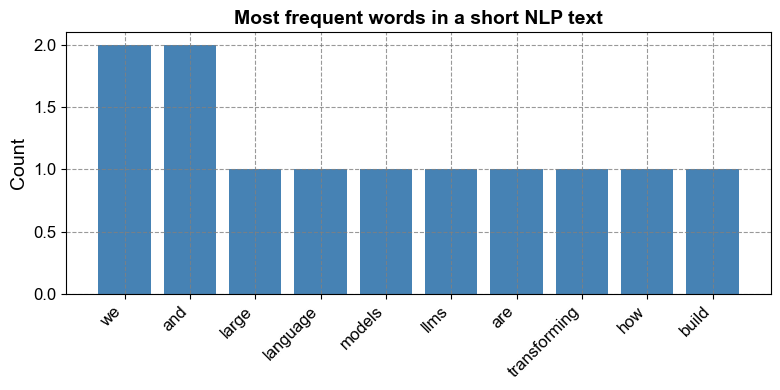

Remark
These lecture notes are in early access and will continue to evolve based on classroom experience and feedback.
1.1. What is Natural Language Processing?#
1.1.1. Learning objectives#
By the end of this section, you should be able to:
Define Natural Language Processing (NLP) and explain what it means to treat language as data.
Describe different granularities of linguistic data (characters, tokens, sentences, documents, corpora).
Give examples of core NLP tasks and map them to their inputs and outputs.
Explain the standard NLP pipeline and how large language models (LLMs) change—but do not eliminate—it.
Run and interpret minimal NLP workflows in Python that perform basic preprocessing and simple analysis.
1.1.2. Language as data#
Natural Language Processing (NLP) is the field that studies how computers can process, understand, and generate human language. In this course, we treat language as data: sequences of characters, tokens, sentences, and documents that can be modeled statistically and with modern neural architectures.
Unlike many other data types, linguistic data is highly structured and context-dependent. The meaning of a word or phrase depends on its neighbors, the sentence in which it appears, and often the broader discourse and world knowledge. NLP methods must therefore account for both local patterns (e.g., morphology, part-of-speech) and longer-range dependencies (e.g., syntax, semantics, pragmatics).
A corpus is a collection of text (or speech) used for training and evaluating models. Examples include collections of news articles, scientific papers, legal documents, code repositories, or social media posts. Throughout this chapter, we will build and analyze small corpora drawn from the web and other public sources to illustrate the full NLP pipeline.
1.1.2.1. Motivating applications#
NLP appears throughout modern computing and data science. A few representative applications:
Search and information retrieval: ranking documents, answering natural language questions.
Conversational agents: chatbots, virtual assistants, customer-support bots.
Document understanding: contract analysis, scientific literature mining, legal and policy analysis.
Social media and opinion mining: sentiment analysis, stance detection, toxicity detection.
Code and technical text: code completion, documentation generation, log analysis.
Many of the examples in this book draw from environmental monitoring, public health, and water resources, where text data—from scientific articles, policy documents, and reports—plays a central role in evidence-based decision making.
1.1.2.2. Granularity of language data#
We can view language at multiple levels of granularity:
Characters: individual letters, digits, punctuation, and symbols. Character-level modeling is helpful for handling noisy text, misspellings, and morphologically rich languages.
Tokens: typically word-like units, though modern models often use subword tokens. Tokenization is a core preprocessing step that we will revisit many times.
Sentences: basic units of meaning and syntax; many NLP tasks operate at the sentence level.
Documents: entire articles, reports, or conversations. Document-level models must capture broader discourse structure.
Corpora: collections of documents assembled for a particular purpose (e.g., training a model, evaluating a system, or studying language use in a domain).
Understanding which level matters for a given task is part of designing an effective NLP workflow.
1.1.3. The NLP pipeline#
A traditional NLP workflow can be viewed as a pipeline:
Data acquisition
Collect raw text from the web, APIs, document repositories, or digitized scans.
(Chapter 1 Section 2 focuses on this step.)Preprocessing and normalization
Clean and standardize the text (e.g., lowercasing, removing markup, tokenization, sentence segmentation).
(Chapter 1 Section 3 covers this in detail.)Linguistic analysis
Add structure such as part-of-speech tags, syntactic parses, or named entities.
(Chapter 1 Section 4 discusses these levels of analysis.)Modeling
Train or apply models to perform tasks such as classification, tagging, generation, or retrieval.Evaluation
Measure model performance with appropriate metrics and, increasingly, human and safety-oriented evaluations.
(Chapter 1 Section 5 introduces evaluation strategies, including for LLMs.)
Large language models (LLMs) change how we think about this pipeline. Instead of custom models for each task, we can often rely on a single pretrained model and adapt it via prompting, few-shot examples, or light-weight fine-tuning. However, the early stages—data acquisition, preprocessing, and careful evaluation—remain essential.
1.1.4. A taxonomy of core NLP tasks#
NLP tasks can be organized along several dimensions: input/output structure, level of analysis (word, sentence, document), and whether the goal is understanding or generation.
Task |
Typical Input |
Typical Output |
Example use case |
|---|---|---|---|
Text classification |
Document, sentence |
Category label |
Spam detection, sentiment analysis |
Sequence labeling |
Token sequence |
Label per token |
POS tagging, named entity recognition |
Question answering |
Question (+ context passage) |
Text span or free-form answer |
Reading comprehension, customer support |
Machine translation |
Source sentence/document |
Target sentence/document |
Cross-lingual communication |
Summarization |
Document or document set |
Shorter summary |
News or scientific article summarization |
Language modeling |
Prefix (sequence of tokens) |
Probability distribution over next token(s) |
Autocomplete, text generation |
Natural language inference |
Pair of sentences (premise, hypo.) |
Entailment / contradiction / neutral label |
Reasoning over textual statements |
Dialogue |
Conversation history |
Next response |
Chatbots, conversational agents |
LLMs can often address many of these tasks with the same underlying model, simply by changing the prompt and possibly a small amount of task-specific data.
1.1.5. A first NLP example: word frequency analysis#
The following example illustrates a minimal text preprocessing pipeline, adapted from the text preprocessing labs in this chapter. We start with a short paragraph, apply basic normalization, tokenize the text, compute word frequencies, and visualize the most frequent words.
import re
from collections import Counter
import matplotlib.pyplot as plt
text = """
Large language models (LLMs) are transforming how we build NLP systems.
Instead of hand-engineering features, we can often start from a pretrained model
and adapt it to our task with prompting and light-weight fine-tuning.
"""
clean = re.sub(r"[^a-zA-Z\s]", " ", text.lower())
tokens = [t for t in clean.split() if t]
freqs = Counter(tokens)
print(freqs.most_common(10))
words, counts = zip(*freqs.most_common(10))
fig, ax = plt.subplots(figsize=(8, 4))
ax.bar(words, counts, color="steelblue")
ax.set_title("Most frequent words in a short NLP text")
ax.set_ylabel("Count")
ax.tick_params(axis="x", labelrotation=45)
plt.setp(ax.get_xticklabels(), ha="right")
fig.tight_layout()
plt.show()
[('we', 2), ('and', 2), ('large', 1), ('language', 1), ('models', 1), ('llms', 1), ('are', 1), ('transforming', 1), ('how', 1), ('build', 1)]

Even this small example raises core questions that we will revisit throughout the course:
How should we tokenize text in different languages and domains?
Which normalization decisions preserve meaning, and which decisions harm it?
When should we rely on simple frequency-based features, and when should we use richer representations?
1.1.6. A second example: running an NLP pipeline with spaCy#
To connect these ideas to practical tools, the next example uses spaCy to run a small NLP pipeline: tokenization, part-of-speech tagging, and dependency parsing.
import spacy
# Make sure you have run: python -m spacy download en_core_web_sm
nlp = spacy.load("en_core_web_sm")
text = "The large language model summarizes environmental reports accurately."
doc = nlp(text)
for token in doc:
print(f"{token.text:12s} {token.pos_:6s} {token.dep_:10s} head={token.head.text}")
The DET det head=model
large ADJ amod head=model
language NOUN compound head=model
model NOUN nsubj head=summarizes
summarizes VERB ROOT head=summarizes
environmental ADJ amod head=reports
reports NOUN dobj head=summarizes
accurately ADV advmod head=summarizes
. PUNCT punct head=summarizes
This example illustrates that:
Tokenization, POS tagging, and syntactic analysis can be obtained from a single, reusable pipeline.
We can inspect linguistic structure (e.g., subjects, verbs, objects) explicitly.
These annotations provide interpretable features for classical models and useful diagnostics for neural/LLM-based systems.
In later sections, we will build on this kind of analysis when we discuss linguistic structure and the evolution of NLP.
1.1.7. From classical NLP to large language models#
Historically, NLP systems were built using hand-crafted rules or relatively small statistical models such as n-gram language models and linear classifiers with engineered features. These approaches required substantial feature engineering and domain expertise.
Neural networks and distributed word representations (embeddings) shifted the focus toward learning features automatically from data. Recurrent neural networks (RNNs), convolutional architectures, and attention mechanisms all contributed to better sequence modeling.
Transformers and, more broadly, large language models (LLMs) represent the current stage of this evolution. Trained on massive corpora with billions of parameters, LLMs learn rich contextual representations that can be adapted to many downstream tasks with minimal task-specific training. In later chapters, we will study how these models work, how to prompt them effectively, and how to integrate them into larger systems.
At the same time, many of the ideas from classical NLP remain relevant: corpus design, preprocessing, linguistic structure, evaluation metrics, and ethical considerations all continue to play a central role in building responsible, effective NLP systems.
1.1.8. Exercises and discussion#
Corpus brainstorming
Pick a domain you care about (e.g., public health, climate policy, finance, software engineering). Describe a corpus you would like to build for that domain. What documents would you include? At what granularity (sentences, paragraphs, full documents) would you model the data?Task mapping
For the same domain, propose at least three NLP tasks (e.g., classification, extraction, summarization). For each task, specify the input format, the desired output, and one potential evaluation metric.Pipeline reflection
Consider a system you use every day (e.g., a search engine, email spam filter, or chatbot). Sketch what you think its NLP pipeline might look like, from data acquisition to evaluation. Where do you think LLMs are used, and where might more classical components still be in place?